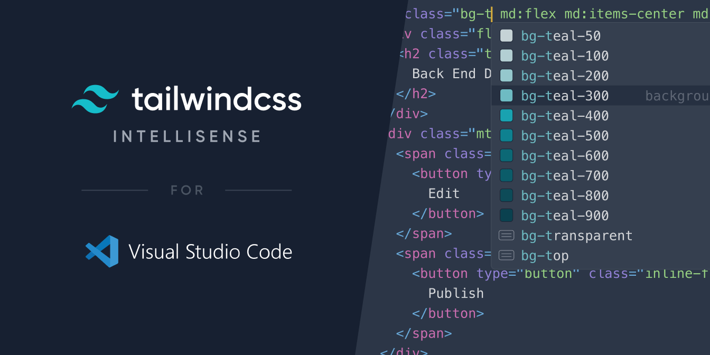

Intelligent Tailwind CSS tooling for Visual Studio Code.
Tailwind CSS IntelliSense enhances the Tailwind development experience by providing Visual Studio Code users with advanced features such as autocomplete, syntax highlighting, and linting.
Check out the project on GitHub to learn more, or add it to Visual Studio Code to get started now.